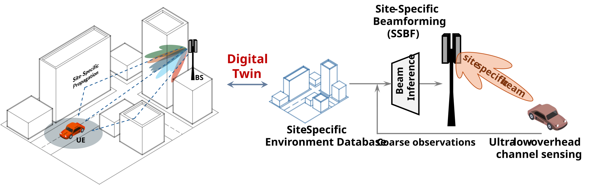
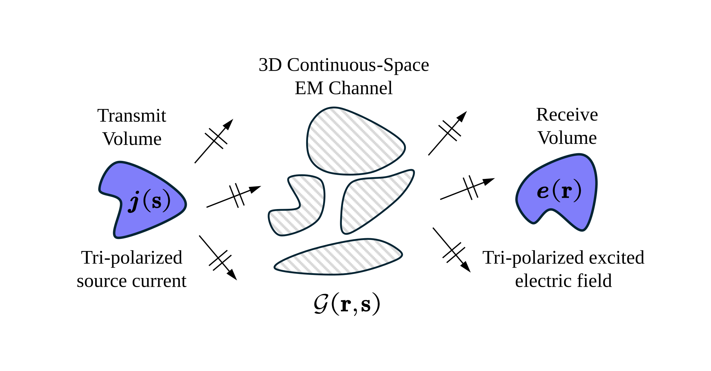

This research direction explores the integration of digital twins with machine learning to enable
site-specific optimization in wireless networks. By creating high-fidelity virtual representations of
physical environments, we leverage detailed spatial and environmental data to train models tailored to
the unique characteristics of specific locations. Our work focuses on developing efficient learning
frameworks that utilize these digital twins to improve communication and sensing performance, bridging
the gap between theoretical models and real-world performance.
Unlike conventional machine learning approaches that often rely on generalized datasets or statistical
channel models, site-specific learning focuses on the unique physical and electromagnetic
characteristics of a particular environment. While traditional methods aim for broad applicability
across diverse scenarios, site-specific learning prioritizes local accuracy and performance by
exploiting the precise site-specific environment properties provided by digital twins, leading to more
robust and efficient network configurations.

This research direction focuses on unveiling the fundamental limits of communication systems, derived from electromagnetic principles, and developing electromagnetically consistent communication models, signal processing techniques, and optimization algorithms. By bridging classic information theory with advanced electromagnetic wave propagation models, we aim to design new communication and sensing strategies for next-generation wireless networks. A key emphasis of our work is characterizing the degrees of freedom (DoF), capacity limits, and beamforming designs for spatially continuous apertures, i.e., continuous aperture arrays (CAPAs), as well as exploiting near-field spherical wave properties. Through rigorous mathematical modeling and optimization, we strive to unlock unprecedented spatial multiplexing gains, high-resolution sensing capabilities, and enhanced physical layer performance in future wireless systems.
© 2026 Zhaolin Wang. All rights reserved.
Page template inspired by Ziwei Liu.